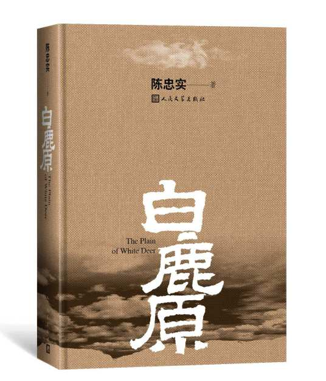

1.情节概述
《白鹿原》以白嘉轩为叙事核心，白鹿两家矛盾纠葛组织情节，以反映白嘉轩所代表的宗法家族制度及儒家伦理道德，在时代变迁与政治运动中的坚守与颓败为叙事线索，讲述了白鹿原村里两大家族白家和鹿家之间的故事。白家人沿袭村子里的族长，主人公白嘉轩一生娶过七个妻子，最后一个陪他终生，并育有三儿一女：白孝文、白孝武、白孝义、白灵。鹿三是白家的长工，黑娃是他的长子。鹿家以鹿子霖为代表，他有两个儿子：鹿兆鹏、鹿兆海。 小说主要讲述了他们的下一代白孝文、鹿兆海、黑娃这一代人的生活：白家后代中规中矩，黑娃却从小就显现出不安分。长大后，白孝文继任族长，黑娃在外做长工，认识了东家的小老婆田小娥，他将她带回村后，受到村人的排斥。黑娃离开村子后投奔革命军，又成为土匪。在此期间鹿子霖、白孝文等都吸上了鸦片，将家败光，去异乡谋生。鹿三以儿媳田小娥为耻，最终杀了她，因终日被田小娥死时的情形折磨而死去。白孝文则在外重新振作，终有一番作为，白灵加入了共产党。一个家庭两代子孙，为争夺白鹿原的统治代代争斗不已。
2.人物形象概括
文本中田小娥初始的形象是一个反叛宗法文化，追求人性的“叛女”形象。她出身于书香门第，在一开始就被父母出售给年龄够得上给她做爷爷的郭举人做小妾，但做小妾又受正室的欺负。出于对人性中最根本欲望的追求，她开始大胆出轨、勾引其他男人——她以为能够长久下去，可命运不济，黑娃还是抛弃了她，她的命运始终无法逃离时代的枷锁。
她是作为一个男权社会及其封建伦理纲常的受害者的形象在文中亮相的。她对黑娃的诱惑虽说有肉欲的放纵色彩，但也是对“存天理、灭人欲”的封建伦理道德的反抗。田小娥人格的转型，准确地说应该是在她第一次挨被鞭条抽打之后——她开始对这个男权世界彻底绝望，充满仇恨，并且主动实施报复。此后她开始不要脸皮，牵着别的男人的生殖器走进窑洞……但这是一种多么无奈、无力和屈辱的报复，一位柔弱的女子栖身于一方破窑，四面八方是猛如禽兽的男权，她唯一的对抗的武器是女人的身体。这种对抗的结果是她被男权社会彻底摒弃，成了一个千夫所指的“荡妇”。
3.人物特点：
她具有反抗精神，敢于追求自己想要的爱情，她甚至一度做过农协妇女代表。但是，成为妇女代表并不意味着她完全的思想解放与意识觉醒，相反地，她的反抗是出于一种身体的本能，完全是为了满足自身的欲望而去反抗传统的封建礼教。她不但明了“自己是一个人”，更明了“自己还是一个女人”，从而，她利用自己的身体进行“性的解放”，以此来表达自己的不满以及叛逆精神。
田小娥是一位颇具争议的人物、她放荡却也勇敢，她混乱却也痴情，而她的所有行为都是其苦难人生的一种需要，也是一种满足自己欲望的解脱，她所做出的出轨行为也只是为了和传统观念完全相悖，由此表达她自身对社会的愤懑。
作为一个反抗者，田小娥也曾做过斗争，她提倡女人剪头发放大脚，禁烟砸烟枪；刀砍奸淫佃户妻女的三官庙老和尚，砸死在南原一带以糟蹋妇女著称的恶霸庞克恭……这一切都是妇女解放的前奏，也是小娥反抗这个社会的表现。
但是，当我们深入的对田小娥的反抗历程做一个分析，我们就会发现田小娥的反抗并不是一个自觉的反抗，她要利用性这唯一的武器来改变自己的社会地位，她拥有更加自由且更积极的性爱选择权，她已经认识到女人身体对于男人的意义，并且学会了利用自己的身体去获取男人的关注和保护。性爱只是她的手段，改变自己的地位才是她的目的。选择黑娃一方面是本能的生理需求，而另一方面，更重要是为了跳出连只狗都不如的火炕，能自由自在的生活。屈服于鹿子霖的淫威，是她意识到他对她的作用，在当时的恶劣环境中如果她得不到他的庇护，就很难生存，因此在与他的交往中他们获得的满足是双向的，他得到了她的肉体，而她也得到了保护自己的目的。
实际上，田小娥这一个女性形象一出现就是背负着原罪的，并一直为此付出着代价。女性的悲惨命运久已有之，自母系氏族社会结束以后，女性的地位就开始下降，她们没有经济支撑，没有自我生存的能力，惟有依靠男人。“悲剧之产生主要正在于个人与社会力量抗争中的无能为力”。她们没有能力与男人抗争，除非她们不想生存。也正是这无能为力导致了她们的悲剧。
4.《白鹿原》中的性别意识
1）正面性
田小娥是一个有争议的人物，她热情而勇敢，迷茫而着迷。她的所有行为都是她悲惨生活的需要，也是满足她解脱欲望的方式。
——大胆的反叛者
作为一个叛逆者，田晓娥确实在斗争。她主张妇女剪发、放大脚，禁烟、砸烟枪，刀劈强奸佃户妻女的三官寺老和尚，与在南苑以宠爱妇女为名的恶霸彭克功对峙，甚至杀死他。这些都是妇女解放的前奏，也是小娥反叛社会的表现。
——公开的性追求
田小娥选择勾引男人是一种本能的生理需要，而另一方面，更重要的是为了自由地生活。她不以表达自己的性欲为耻，不拘泥于所谓的 "性羞耻"。她对性的追求是大胆的，不怕流言蜚语。她勇于满足自己的需求，而不是像以前那样顺从和躲避。
她不羞于表达自己的性欲望，没有被禁锢在所谓的“性羞耻”中，她对性拥有大胆追求，并不畏惧流言蜚语，勇敢去满足自动的欲望，而不是像当时的传统女性一般唯唯诺诺、隐藏自己。事实上，田小娥的这种性欲自由正好体现了她的意志自由——表达性方面的自由是她整个人拒绝束缚的一个体现。
——作家积极性别观的塑造与体现
田小娥是复杂的，她拥有传统女性的一面，但同时她也拥有着现代女性意识的萌芽。她一方面渴望家庭、渴望相夫教子的日常——她希望能够有一位她所爱的男人，而她可以和她的爱人一起过上传统的生活。另一方面，她拒绝包办婚姻，希望能够拥有自己的爱情选择权。此外，她大胆地追求自己的性生活，直面自己的性欲望，这也是她拥有现代女性意识的体现。然而，在当时传统守旧的社会背景下，她的处境是极其危险的。她经受着传统和现代的撕扯与剥夺，挣扎于自我探索和被迫接受中。在一次又一次被男性索取和欺骗的过程中逐渐疯狂、不计后果。而对于男性而言，一方面，她仅仅只是男性的工具，男人们利用她对性的开放态度满足自己的肉欲。另一方面，以男性为首的村委会成员也在不停打压田小娥，给她的行为贴上“放荡”的标签予以惩罚，企图用传统来规训田小娥。
因此，陈忠实能塑造出复杂的女性角色，能刻画三维立体的女性形象，并且写出了具有现代意识女性在传统男权社会所遭受的危险和残害，这是陈忠实性别意识较为先进的直接体现。
2）局限性：
——女性权利意识的缺失
当我们深入分析田小娥的反叛时，我们会发现田小峨的反叛不是一种自觉的反叛；她想用性作为改变社会地位的唯一武器。她意识到女人的身体对男人的重要性，并学会用她的身体来获得男人的关注和保护。虽然与传统文化所期望的女性相比，这是一种更积极的性别选择，也是一种更自主的身体态度，但她对身体的使用并不是基于对自己作为人的权利的认识。性只是达到目的的一种手段；改变她的身份是她的目标。
——对男性的依赖
她似乎背负着原罪，并一直在付出代价。妇女的悲惨命运早已为人所知。自母系氏族社会结束以来，妇女的地位开始下降；他们没有经济支持，没有能力独立生存，只能依靠男人。“悲剧的主要原因是个人在与社会力量的斗争中无能为力。除非他们不想生存，否则他们无法与男人战斗。也是这种无能为力导致了她的悲剧。
——人物塑造与作家消极性别观的体现
男性凝视：
这部作品对于田小娥的描写中充满着男性凝视。无论是对于田小娥外貌的议论，或者是对于田小娥性表现的评价，都处处充满着男性的目光。
1.plot summary
The story of the two families in the village of White Deer Plain is the core of the narrative. The conflicts and entanglements between the Bai and Lu families organize the plot to reflect the patriarchal family system. Also, Confucian ethics represents perseverance and decadence in the changing times and political movements. The main character Bai Jiaxuan has married seven wives in his life, the last one accompanying him for life, and has three sons and one daughter: Bai Xiaowen, Bai Xiaowu, Bai Xiaoyi, and Bai Ling. Deer San is the longest worker in the Bai Family, and Heiwa is his eldest son. Lu Zilin represents the Lu family with two sons: Lu Zhaopeng and Lu Zhaohai. The novel focuses on the next generation's lives, Bai Xiaowen, Lu Zhaoghai, and Heiwa. While the descendants of the Bai family are moderate, Heiwa shows restlessness from a young age. When he grows up, Bai Xiaowen succeeds as the patriarch, and Heiwa works as a long-time laborer and meets Tian Xiao'e, the young wife of the proprietor, who brings her back to the village. After leaving the town, Heiwa defected to the revolutionary army and became a bandit again. During this period, Lu Zilin and Bai Xiaowen became addicted to opium, lost their families, and went to foreign lands to make a living. Lu San, ashamed of his daughter-in-law Tian Xiao'e, eventually killed her and died because he was tormented by the circumstances of Tian Xiao'e's death. Bai Xiaowen, on the other hand, is rejuvenated and ultimately makes a career out of it, and Bai Ling joins the Communist Party. Two generations of a family have been fighting for the rule of the White Deer Plain.
2.Character profile overview
The initial image of Tian Xiao'e in the text is that of a "rebellious girl" who rebels against patriarchal culture and seeks humanity. She comes from a scholarly family, but in the beginning, her parents sold her as a concubine to Guo Juzhu, who is old enough to be her grandfather. Still, as a concubine, she is bullied by the prominent family. Out of her pursuit of the most fundamental desires of human nature, she begins to cheat and seduce other men boldly - she thinks she can earn a perfect marriage. Still, fate is not kind, and her lover abandons her, which leads her future to shackles of the times forever.
She is presented in the text as a victim of a patriarchal society and its feudal ethics. Although her temptation to Heiwa is tinged with sensual indulgence, it is also a rebellion against the feudal ethics of "preserving heavenly justice and extinguishing human desires.” The transformation of Tian Xiao'e's personality, to be precise, should be after her first whipping - she began to despair of the male world, full of hatred, and took the initiative to take revenge. However, it is a kind of helpless, powerless, and humiliating revenge——a weak woman living in a broken kiln, surrounded by fierce male power like animals. Her only weapon of resistance is the woman's body. The result of this confrontation is that she is entirely rejected by the male society and becomes a "slut" that a thousand husbands refer to.
3.Characteristic.
She has a rebellious spirit and dares to pursue the love she wants, and she was even a women's representative of the Farmers' Association at one time. However, becoming a women's representative does not mean she is completely liberated and awakened. On the contrary, her rebellion is out of a physical instinct, and she rebels against the traditional feudal rituals to satisfy her desires. She not only understands that "she is a human being,” but also that "she is still a woman,” so she uses her body for "sexual liberation" to express her dissatisfaction. She uses her body for "sexual liberation" to show her dismay and rebellious spirit to society.
4.gender awareness in White Deer Plain
Positive：
Tian Xiao'e is a controversial character; she is passionate but brave, confused, and fascinated. All her actions are a need of her miserable life and a way to satisfy her desire for relief.
As a rebel, Tian Xiao'e did struggle. She advocated for women to cut their hair and enlarge their feet, banned smoking and smashed the smoking gun, knifed the old monk of Sanguan Temple who raped the wives and daughters of the tenants, and confronted and even killed the bully Pang Kegong who was famous for taking advantage of women in the name of spoiling them in Nan Yuan. These are the prelude to women's liberation and the performance of Xiao'e's rebellion against society.
Tian Xiao e’s choice of seducing men is an instinctive physiological need, while on the other hand, more importantly, it is to live freely. She is not ashamed to express her sexual desires and is not confined to the so-called “sexual shame.” She is bold in her sexual pursuits and is not afraid of gossip. She is brave enough to satisfy her needs rather than being submissive and hiding like the traditional women of her time. Tian Xiao'e's freedom of sexual desire reflects her freedom of will - her freedom to express her sexuality is a reflection of her rejection of bondage as a whole.
- Characterization and the Embodiment of the Writer's Positive Gender Perspective
Tian Xiao'e is complex; she possesses a traditional feminine side, but at the same time, she also contains the budding of modern, feminine consciousness. On the one hand, she longs for a family, for the routine of raising a husband and children - she wants to have a man she loves, and she can live a traditional life with her lover. On the other hand, she rejects arranged marriages and wants to have her own choice of love. In addition, she boldly pursued her sexual life and faced her sexual desires, which reflected her possession of modern, feminine consciousness. However, in the time's traditional and old-fashioned social context, her situation was hazardous. She endured the tearing and deprivation of tradition and modernity, struggling with self-discovery and forced acceptance. In the process of being claimed and created by men, again and again, she gradually became crazy and reckless. As for the men, on the one hand, she is merely a tool for men, who take advantage of her openness to sex to satisfy their carnal desires. On the other hand, the male-led village committee members keep suppressing Tian Xiao'e, labeling her behavior as “slutty" and punishing her, trying to use tradition to discipline her.
Therefore, Chen Zhongshi can create complex female characters, portray a three-dimensional female image, and write about the dangers and cruelties suffered by women with modern consciousness in the traditional patriarchal society, which directly reflects Chen's relative more advanced gender consciousness.
Limitation：
- The lack of awareness of women's rights
When we analyze Tian Xiao'e's rebellion in-depth, we will find that Tian Xiao'e's rebellion is not a conscious rebellion; she wants to use sex as the only weapon to change her social status. She has realized the significance of a woman's body to men and learned to use her body to get men's attention and protection. Although this is a more active choice of sex and a more autonomous attitude to her body compared to what traditional culture expects women to be, her use of the body is not based on awareness of her rights as a human being. Sex is only a means to her end; changing her status is her goal.
She appears burdened with original sin and has been paying its price. The tragic fate of women has been known for a long time. Since the end of matrilineal clan society, the status of women began to decline; they had no economic support, no ability to survive on their own, and only relied on men. "The tragedy is mainly due to the individual's powerlessness in the struggle against social forces. They are not able to fight against men unless they do not want to survive. It is also this powerlessness that leads to her tragedy.
- Characterization and the Embodiment of the Writer's Negative Gender Perspective
——Male Gaze
This work is full of the male gaze in the depiction of Tian Xiao'e. Whether it is the discussion of Tian Xiao'e's appearance or the evaluation of Tian Xiao'e's sexual performance, there is a male gaze everywhere.